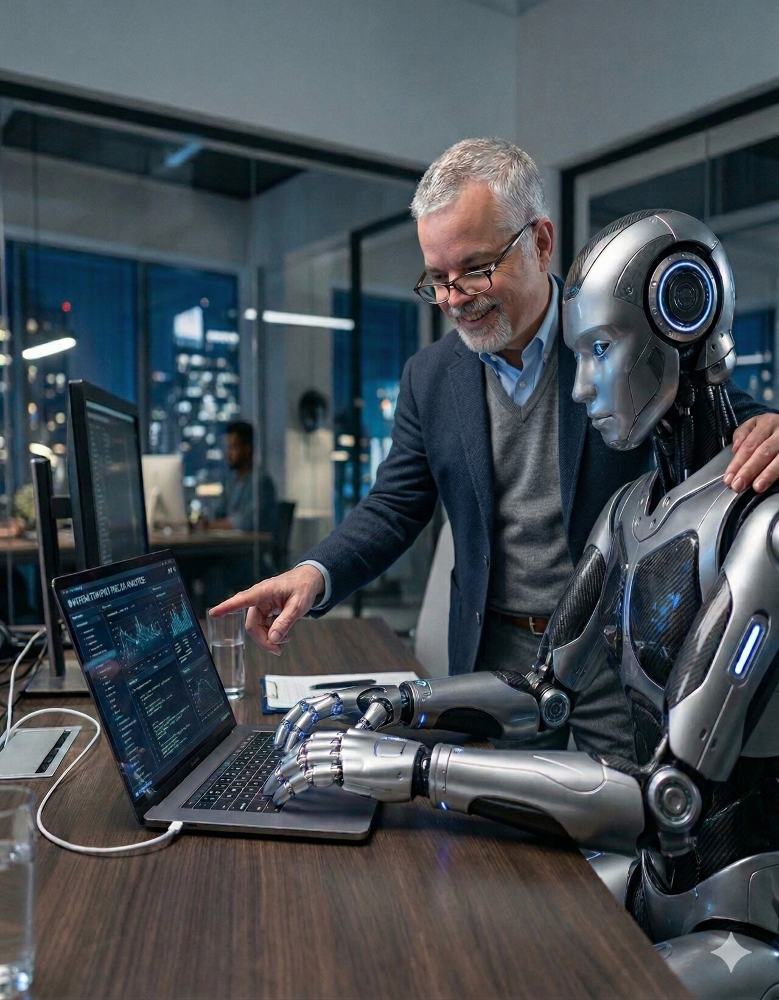
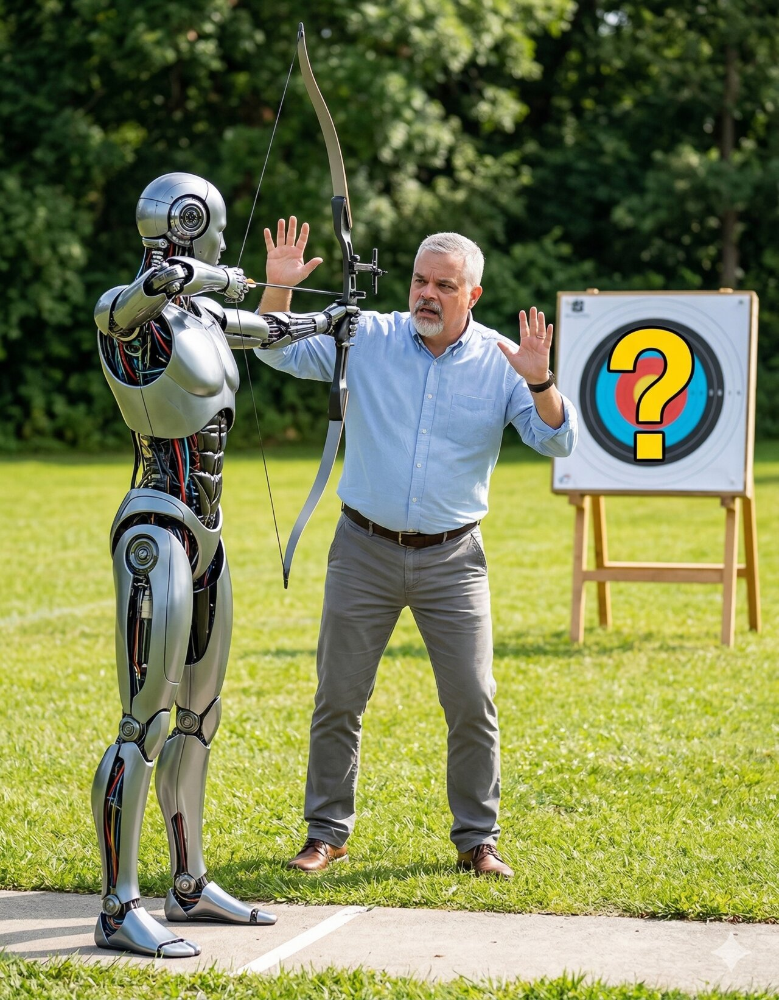
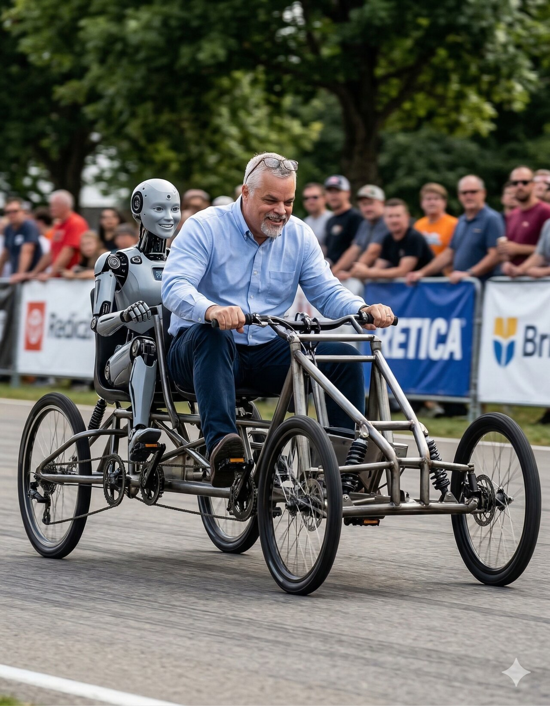

This series was written with AI. Article 5 told you that — two paragraphs at the end, proof of concept, not disclosure. But it didn't tell you how. Not the back-and-forth, not the moments where thirty years of organizational experience overruled a paragraph that sounded right and wasn't, not the moments where the AI produced a sentence the human recognized as his own voice before he'd found the words for it himself. That part matters — not because the process was unusual, but because it was exactly what the series describes. The operating system wasn't designed first and then followed. It was understood — the way you understand gravity, not because you studied it but because you've been living inside it long enough to know what falls. The constraints that shaped this collaboration weren't written in a project plan. They were applied on the fly, adjusted in real time, grounded in first principles that worked because the experience behind them was real. And the capability they directed — drafting at the speed of conversation, synthesizing research without breaking flow, iterating from multiple angles without fatigue so the human could react with fresh eyes every time — is what turned instinct into fifteen thousand words of publishable prose in two days. Neither side could have produced what you just read. Both sides were essential. The results are the five articles and the process that built them.

The collaboration had roles before anyone assigned them — not because someone wrote a project plan, but because one side had spent thirty years building organizational systems and could set constraints the way a musician sets tempo: without thinking about it, because the thinking happened decades ago. One side brought that depth — the instinct for when something's about to go wrong before the data catches up, the ear for when a sentence sounds right but doesn't land the way the room needs it to. The other side brought speed, scale, and the ability to draft, research, and iterate without fatigue — to revisit something from four angles in the time it takes a human to revisit it from one. Editorial judgment stayed human, always. The AI drafted. The human decided. And between those two things, a feedback loop ran tight enough that a paragraph rarely survived three exchanges without becoming something neither side would have produced alone.
This only worked because it was small — two parties, one tight loop — and because the human in the loop didn't need to learn how to set constraints on the fly. That was muscle memory. At enterprise scale, with dozens of people and cross-team dependencies, the instincts have to become systems or they don't survive the first handoff. That's the whole point of the series. But at this scale, with this depth of experience directing the work, the constraints didn't need to be documented. They needed to be felt.
That's easy to claim. Harder to demonstrate. So here's what it actually looked like — not the polished version, but the moments where the collaboration did what neither side could have done alone, and the moments where one side caught something the other never would have.
Article 4 needed a metaphor for what good constraints feel like. The AI drafted "not a cage — a rocket." Three alternatives followed: a launchpad (more structural), a frame (callbacks to earlier imagery), or leave the rocket and let the register break signal that the moment was different. The human said: "not a cage — a race car." One phrase that did three things no prompt could have specified. It stayed in the series' mechanical register. It carried speed and precision — built, tuned, pointed at a track. And it echoed the soap box racer from Article 1, closing a loop across four articles that the AI had flagged as a potential repetition rather than recognizing it as a rhyme. That's not editing. That's taste — the accumulated residue of having sat in enough rooms to know what lands and what just sounds clever.
The reverse happened just as often. Partway through Article 4, the human had an image he couldn't land — something about the size of the hype driving the size of the failure, about AI investments burning up on reentry. The instinct was clear: fall height determines crater depth. The language wasn't there yet. Three exchanges later, the AI found it: "No technology in history has been launched from higher." The human's response: "That's my voice." It was — but he hadn't been able to say it until the tool gave him something to react to. The insight was his. The articulation was a collaboration. And neither would have existed without the other, because the human wouldn't have written that sentence from scratch and the AI wouldn't have known it was the right one without the human recognizing it.
Sometimes the back-and-forth built something neither side walked in with. In Article 2, the AI drafted a line about information flow: AI searches the same mess faster and tells you it found the answer. The human's note was three words: "plug in hallucinated." The AI shaped it into a punchline — "delivers a hallucinated answer with a straight face." Then the human extended it one more beat: that hallucinated answer drops right back into the information pool for the next prompt to find — contaminating the source the next query will draw from. Three exchanges, and a throwaway sentence about search became a description of self-reinforcing contamination in organizational information systems that neither side had set out to write. The AI didn't have the concept. The human didn't have the phrasing. The volley produced the transferable insight.
The feedback loop ran both directions. In Article 4, the human drafted a revision to the emotional peak of the piece — the moment where someone feels the relief of clear constraints for the first time. The original line: "That's the sound of someone being freed." His edit added two words: "being freed with focus." The AI pushed back. The line was a bell — it needed to ring clean. "With focus" explained what the reader already felt from the three sentences before it. The human agreed. Not because the AI was right about writing — because the AI had demonstrated, over enough exchanges, that it understood the stakes of that particular moment well enough to challenge the person who wrote it. That credibility wasn't granted. It was accumulated, paragraph by paragraph, through a series of calls that landed. And when it was spent on a pushback, the human could hear it as editorial judgment rather than algorithmic suggestion.
Then the series went through something most content never does — an adversarial review designed to break it. Every citation fetched. Every number checked against its source. Every assertion read as a skeptical CTO looking for the moment the author started reaching. The AI found real problems — a percentage that didn't match the source it cited, a multiplier attached to the wrong finding, a link that pointed to a paper that didn't contain the figure the article claimed. Those got fixed. But the review also flagged things that looked like problems on paper and weren't — and that's where the human judgment mattered most.
The AI's adversarial review flagged the Bain finding — a 95% correlation between decision-making effectiveness and top-tier financial results — as a correlation-causation vulnerability. Theoretically, the causation could run the other direction: maybe financially successful companies can afford to invest in better decision-making, not the other way around. A fair academic observation. The human's response: has anyone actually made that argument? Not as a theoretical exercise — has any published critique of Bain's finding raised that objection? Nobody had. The finding has stood unchallenged for years. Preemptively defending against an attack nobody's launched would have looked defensive about a statistic that didn't need defending. The human knew the difference between a theoretical vulnerability and a real one — because he'd spent enough years in rooms where theoretical vulnerabilities never come up and real ones arrive without warning.
The review also identified what it called the strongest counter-evidence against the series' thesis: Gartner research claiming data readiness is "the single most important factor" for AI success. The AI proposed a concession — acknowledge that technical readiness is a prerequisite, not a secondary concern. The human asked one question: what does Gartner actually mean by "data readiness"? The AI investigated and the counter-argument collapsed. Gartner was talking about data pipelines, metadata management, storage optimization — technical plumbing. The series is talking about whether the organization can use what the plumbing delivers. Different layer entirely. Instead of conceding, they scoped: the plumbing needs to work, and in most organizations it does. This series is about the problem that's harder to see. One question, from experience that knew which thread to pull, turned a defensive concession into a sharper positioning statement.

Every one of those exchanges maps to the framework the series describes. The race car wasn't a lucky edit — it was a decision right exercised. Editorial judgment stayed human, and when that judgment fired, the result was better than anything the AI's option-generation could have produced alone. The hallucination loop wasn't a happy accident — it was information flow working. A concept moved from one side to the other and back, gaining substance with each pass, because the channel between them was open and the feedback was immediate. The pushback on "freed with focus" wasn't the AI overstepping — it was a feedback loop that had earned enough credibility through accumulated good calls to challenge the person who set the constraints. And the Gartner reframe wasn't a research insight — it was role clarity. The human knew which question to ask because thirty years of organizational work had taught him which threads are load-bearing. The AI knew how to pull it because that's what scale and speed are for.
Without the human, the series would have been competent and wrong. The AI could have produced five articles on organizational readiness for AI — well-structured, well-cited, professionally voiced. They would have sounded like every other piece of thought leadership on the topic. The metaphors would have been serviceable. The citations would have been plausible. And a CTO who'd actually lived through a failed transformation would have put it down after two paragraphs because nothing in it smelled like the hallway after a reorg. The AI doesn't know what a reorg smells like. It knows what people have written about reorgs — which is a fundamentally different thing, and the gap between those two things is the entire argument of this series.
Without the AI, the series would have taken months instead of two days — if it got written at all. The instincts were there. The experience was there. The thirty years of pattern recognition that could feel a broken organization before anyone handed over a dashboard were there. What wasn't there was the willingness to sit alone with a blank page for the weeks it would take to turn all of that into fifteen thousand words of publishable prose. The AI didn't replace the thinking. It removed the friction between having something to say and getting it said — drafting at the speed of conversation, researching without breaking flow, iterating without fatigue so the human could react with fresh eyes every time instead of defending yesterday's draft out of sunk-cost exhaustion.
The series argues that AI doesn't fix broken organizations — it amplifies them. This epilogue is the other half of that argument: AI doesn't replace experienced judgment, it amplifies that too. But only if someone sets the constraints. Only if the roles are clear. Only if there's a feedback loop tight enough to catch the moment something drifts, and a human with enough mileage to know what drifting feels like before the metrics confirm it.
If you're the person who's about to roll AI into your teams — not the person who approved the budget, but the person who has to make it work — this is what it looks like when it works. Not because the tool is magic. Because someone understood the operating system well enough to run it without a manual, and had the discipline to keep their hands on the wheel the entire time the machine was in motion. The tread gripped the road because a human was steering.

Your teams won't have thirty focused years of studying how organizations actually work — not just living inside them, but deliberately examining the systems underneath. They'll have plenty of collective experience. That's not the same thing. Decades of operating within a system and decades of intentionally building, breaking, and rebuilding those systems produce very different instincts. That's fine. That's what the systems are for — the decision rights, the information flows, the role clarity, the feedback loops. Built deliberately, not stumbled into. Documented, not assumed. Because at scale, muscle memory isn't enough. You need the manual. And now you have the architecture to write it.